AJR
Members: Jack Met, Ryan Met, Adam Met
Genre: Indie pop, electric pop
Albums: The Maybe Man, The Click, Neotheater
Songs: Burn the House Down, World’s Smallest Violin, 100 Bad Days
Listen to AJR Songs | SpotifyThis page is a lot of my favorite bands! It’s in alphabetical order, and mentions the members, genre, albums, and songs. This list isn’t even all of the bands I listen to, but it’s the ones that I listen to most. Disclaimer: These lists don’t include all albums or all songs. Just a few albums and some of my favorite songs of theirs!
Members: Jack Met, Ryan Met, Adam Met
Genre: Indie pop, electric pop
Albums: The Maybe Man, The Click, Neotheater
Songs: Burn the House Down, World’s Smallest Violin, 100 Bad Days
Listen to AJR Songs | Spotify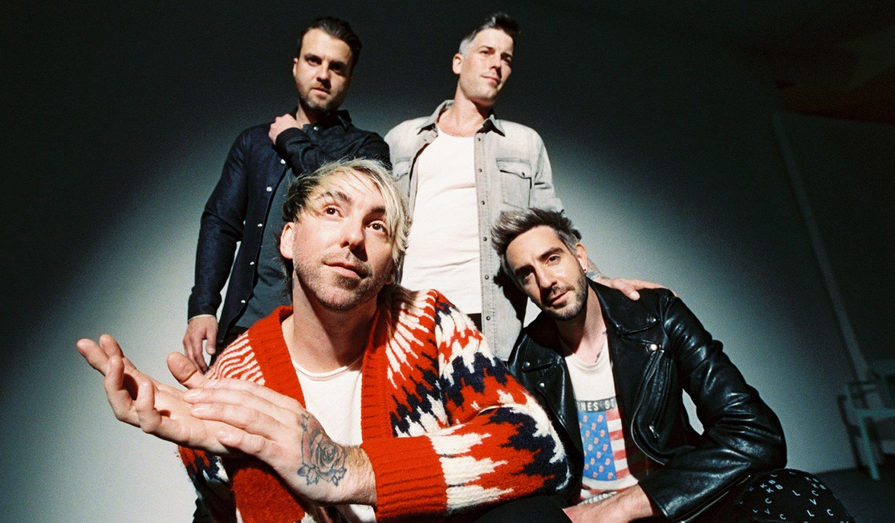
Members: Alex Gaskarth, Jack Barakat, Rian Dawson, Zack Merrick
Genre: Pop punk
Albums: Future Hearts, Last Young Renegade, Wake Up, Sunshine
Songs: Lost in Stereo, Good Times, Monsters
Listen to All Time Low Songs | Spotify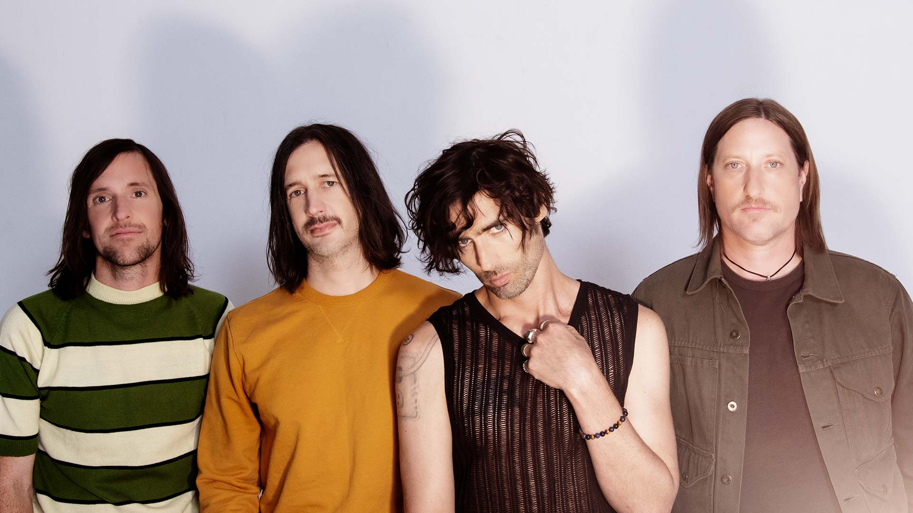
Members: Tyson Ritter, Nick Wheeler, Chris Gaylor, Mike Kennerty
Genre: Pop punk, alternative rock
Albums: Sandbox, Move Along, Kids in the Street
Songs: Dirty Little Secret, It Ends Tonight, My Paper Heart
Listen to The All-American Rejects Songs | Spotify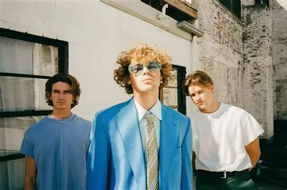
Members: Dawson Daugherty, Luke Fabry, Cole Clisby
Genre: Indie pop
Albums: Dive, Thank God It’s Almost Monday
Songs: Jupiter, Can’t Slow Down, Sun Keeps on Shining
Listen to almost monday Songs | Spotify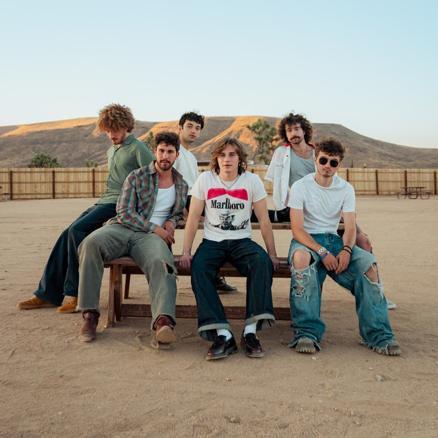
Members: Axel Ellis, Sal Defilippis, Hunter Olshefke, Quinn Dolan, Phil Pistone, Chaadmon Croft
Genre: Indie rock
Albums: So Much To Tell You, Bear on a Roof (EP)
Songs: Blurry Lights, 7x9, Hotel Room
Listen to Ax and the Hatchetmen Songs | Spotify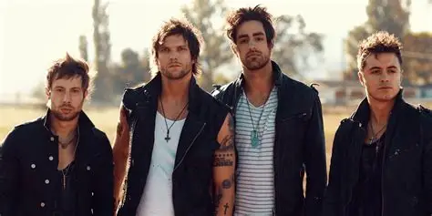
Members: Martin Johnson, John Keefe, Gregory James, Jamel Hawke
Genre: Pop punk
Albums: Love Drunk, Crazy World, Read Between the Lines
Songs: The Great Escape, Love Drunk, Hero/Heroine
Listen to BOYS LIKE GIRLS Songs | SpotifyMembers: Oli Sykes, Lee Malia, Matt Kean, Matt Nicholls
Genre: Deathcore - Pop rock
Albums: Sempiternal, That’s the Spirit, Amo
Songs: Throne, Mantra, Nihilist Blues
Listen to Bring Me The Horizon Songs | Spotify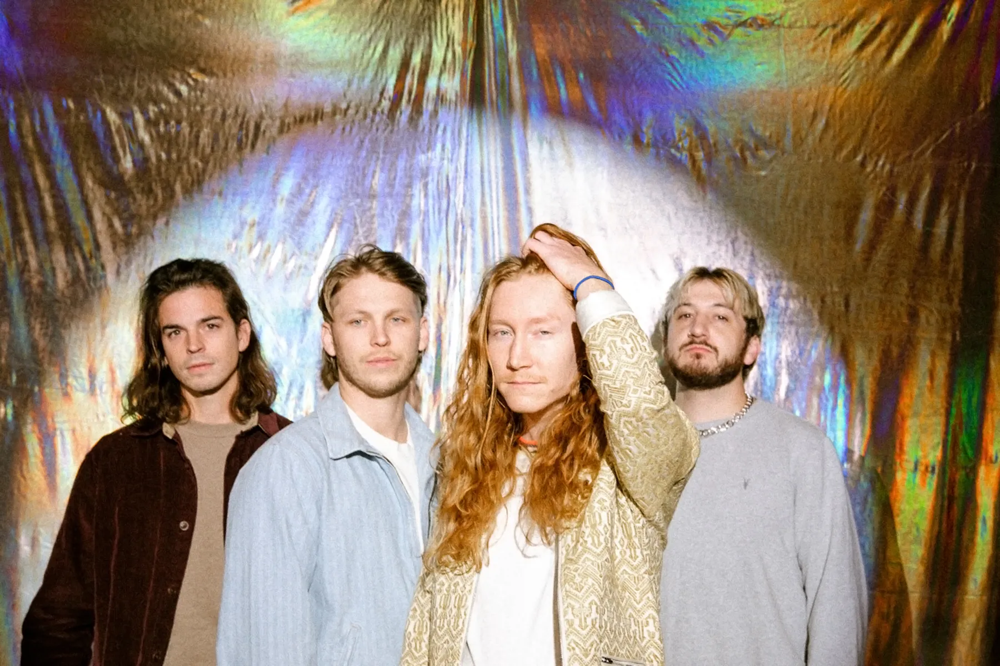
Members: Zach Grace, Kyle Hill
Genre: Indie pop
Albums: Future Shine, come out. you’re hiding, sights & sounds
Songs: hold on, warm blood, Skate
Listen to flor Songs | SpotifyMembers: Collin Walsh, Dallas Molster, Nick Veno, Andrew Kyne
Genre: Pop punk, alternative rock
Albums: The Hart, Kept Me Alive, Let Go
Songs: Motown, In Violet, Atlantic
Listen to Grayscale Songs | Spotify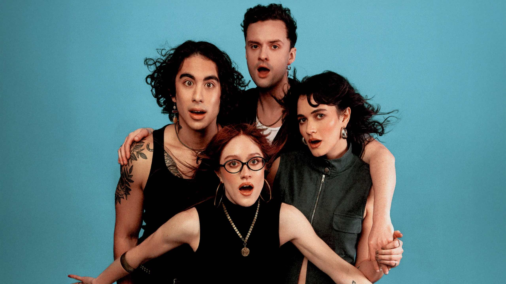
Members: Calvin Langman, Luke Davis, Nico Rose, Raina Mullen
Genre: Indie rock
Albums: Lovesick, Under the Shade of Green, What Could Be Better
Songs: Dirty Imbecile, Moving, Everything You Do
Listen to The Happy Fits Songs | SpotifyMembers: Dallon Weekes
Genre: New wave, Indie pop
Albums: Razzmatazz, Gloom Division
Songs: Choke, Gloomtown Brats, Razzmatazz
Listen to I DONT KNOW HOW BUT THEY FOUND ME Songs | Spotify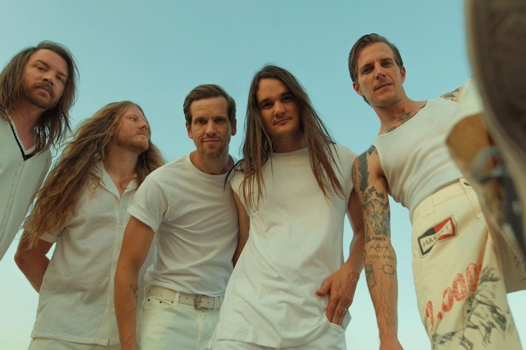
Members: John O’Callaghan, Pat Kirch, Garrett Nickelsen, Jared Monaco, Kennedy Brock
Genre: Pop rock, alternative rock
Albums: American Candy, Can’t Stop Won’t Stop, Joy Next Door
Songs: Black Butterflies & Déjà Vu, Diet Soda Society, Sticky
Listen to The Maine Songs | Spotify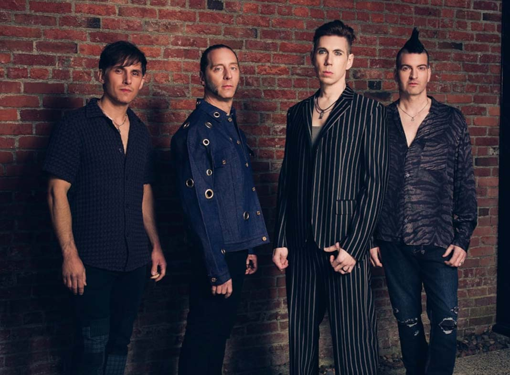
Members: Josh Ramsay, Ian Casselman, Matt Webb, Mike Ayley
Genre: Pop rock
Albums: Astoria, Ever After, Masterpiece Theatre
Songs: Haven’t Had Enough, Stutter, Cross My Heart
Listen to Marianas Trench Songs | Spotify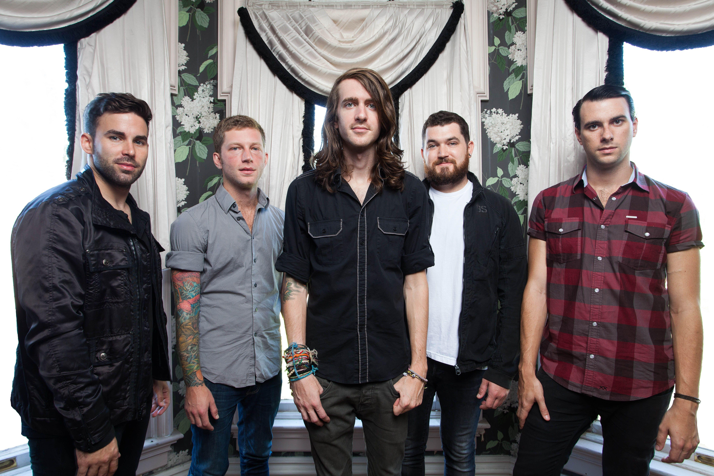
Members: Derek Sanders, Alex Garcia, Brooks Betts, Jeremy Lenzo, Jake Bundrick
Genre: Pop punk, emo
Albums: A Lesson in Romantics, Sugar What It Means To Fall Apart
Songs: Jersey, Jaime All Over, Piece of Your Heart
Listen to Mayday Parade Songs | Spotify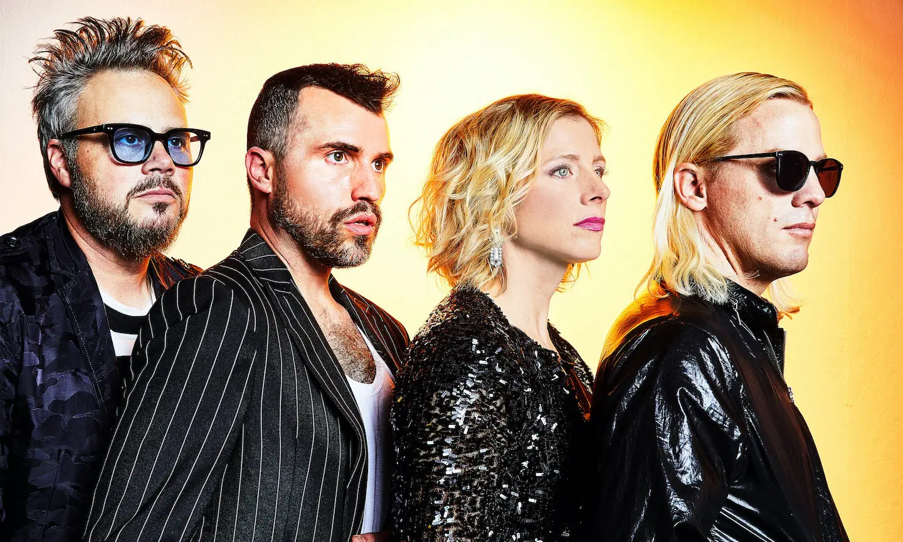
Members: Tyler Glenn, Elaine Bradley, Chris Allen, Branden Campbell
Genre: Alternative rock, pop
Albums: Pop Psychology, Habits, Picture Show
Songs: Everybody Talks, Animal, I Am The D.J.
Listen to Neon Trees Songs | Spotify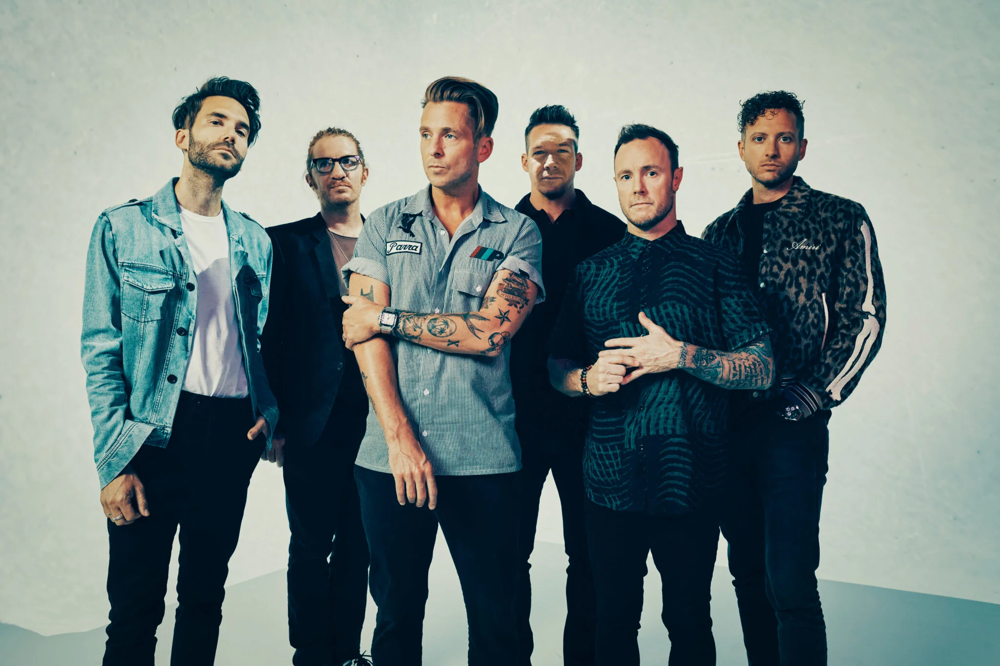
Members: Ryan Tedder, Zach Filkins, Drew Brown, Brent Kutzle, Eddie Fisher, Brian Willett
Genre: Pop rock
Albums: Native, Waking Up, Human
Songs: Counting Stars, Secrets, Good Life
Listen to OneRepublic Songs | SpotifyMembers: Adam Young
Genre: Synth-pop, electropop
Albums: Ocean Eyes, Coco Moon, Cinematic
Songs: Fireflies, Hello Seattle, Good Time
Listen to Owl City Songs | Spotify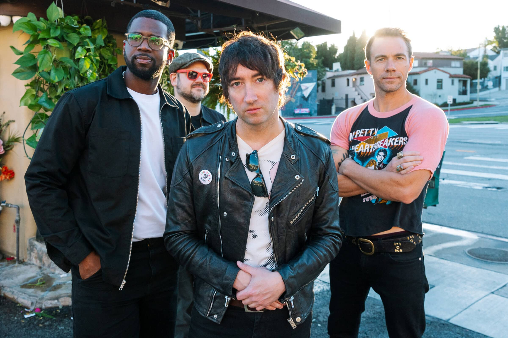
Members: Tom Higgenson, Tim Lopez, Mike Retondo, De’Mar Hamilton
Genre: Pop rock, pop punk
Albums: Big Bad World, Come On Over, Stop
Songs: Hey There Delilah, Spaghetti Tattoo, Boomerang
Listen to Plain White T's Songs | Spotify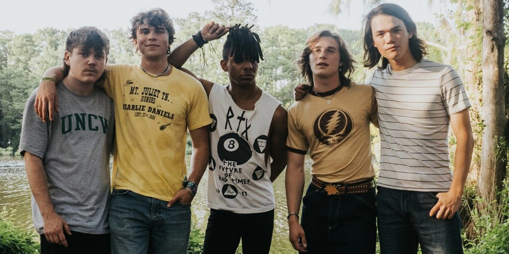
Members: Will Lipton, Axel Ellis, Jesse Golliher, Zendé Murdock
Genre: Alternative rock, indie rock
Albums: The Runarounds (Prime Video Original Series Soundtrack)
Songs: Ghosts, Minivan, Shoelace
Listen to The Runarounds Songs | Spotify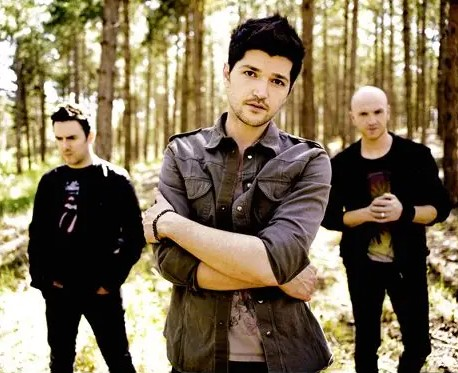
Members: Danny O’Donoghue, Glen Power, Benjamin Sargeant, Ben Weaver
Genre: Pop rock, soft rock
Albums: Science & Faith, Freedom Child, No Sound Without Silence
Songs: Breakeven, Paint the Town Green, Hall of Fame
Listen to The Script Songs | Spotify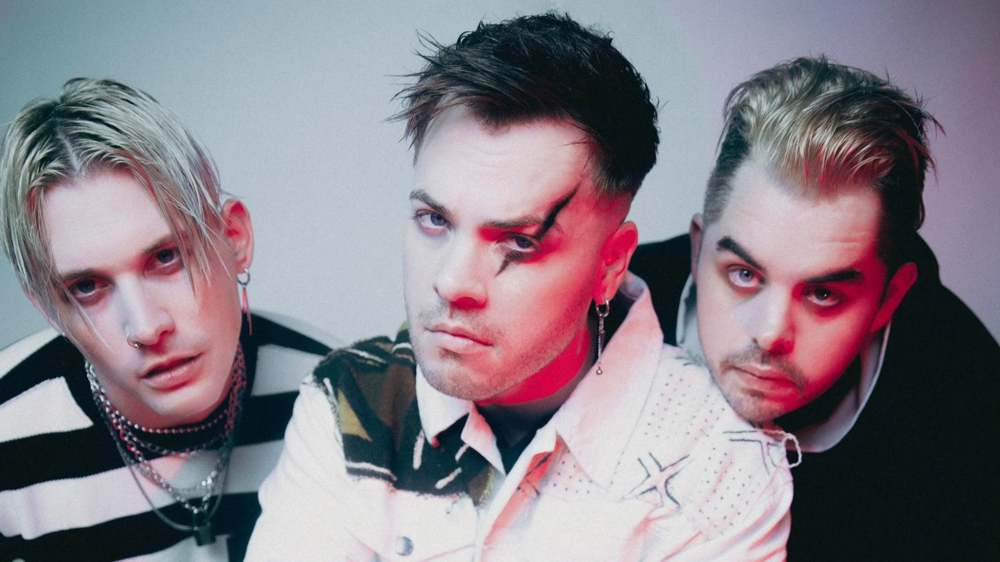
Members: Cody Carson, Maxx Danziger, Zach DeWall
Genre: Alternative rock, pop punk
Albums: Duality, Upside Down, Elsewhere
Songs: Ancient History, Hourglass, Wolf in Sheep’s Clothing
Listen to Set It Off Songs | Spotify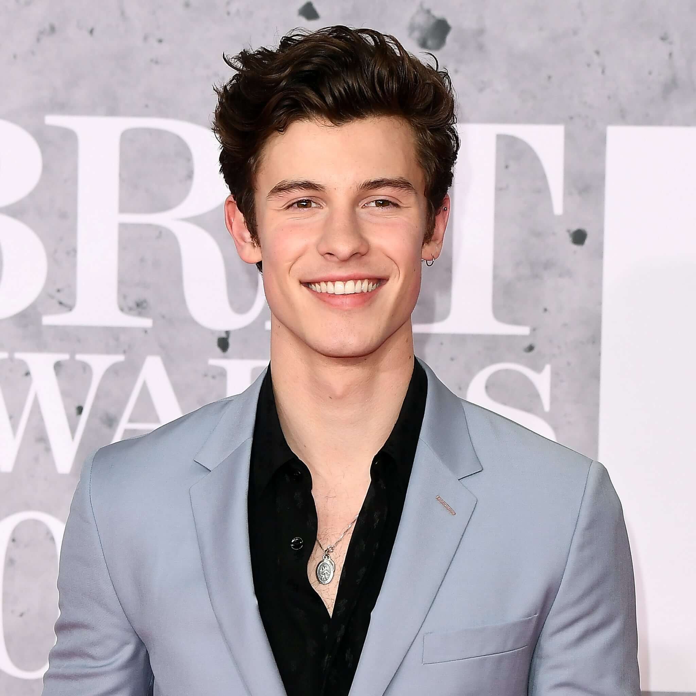
Genre: Pop
Albums: Handwritten, Illuminate, Wonder
Songs: Stitches, Life of the Party, Imagination
Listen to Shawn Mendes Songs | Spotify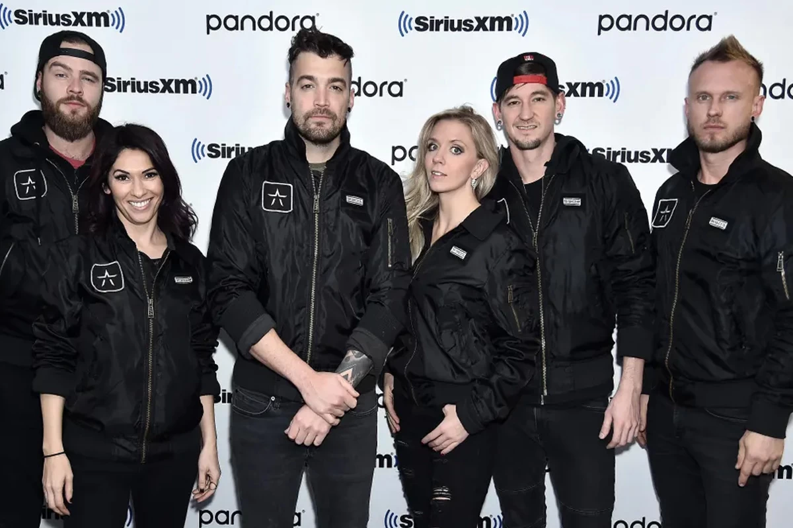
Members: Dustin Bates, Ron DeChant, Brock Richards, Adam Gilbert, Siobhán Richards, Zuzana Engererova, Cory Juba
Genre: Cinematic rock, alternative rock
Albums: Transmissions, Vessels, Divisions
Songs: My Demons, ECHO, Carnivore
Listen to STARSET Songs | SpotifyMembers: Derek DiScanio, Tyler Szalkowski, Ryan Scott Graham, Evan Ambrosio
Genre: Pop punk, emo pop
Albums: Around the World and Back, Kings of the New Age, Living Proof
Songs: Secrets, Everybody Except You, Mine Is Gold
Listen to State Champs Songs | Spotify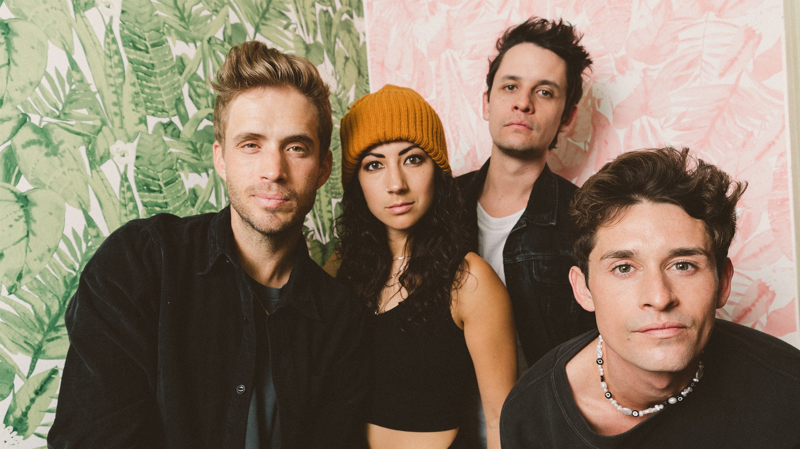
Members: Brian Logan Dales, John Gomez, Stephen Gomez, Jess Bowen
Genre: Pop rock, pop punk
Albums: Love Like This, Legendary, Meet Me at the Record Store
Songs: Boomerang, Chelsea, Street Lightning
Listen to The Summer Set Songs | SpotifyGenre: Pop punk, emo
Albums: Poster Child, Survival In Motion
Songs: Shapeshifting, Certified Depressant, Growing Pains
Listen to Taylor Acorn Songs | SpotifyMembers: Tyler Joseph, Josh Dun
Genre: Alternative rock - pop rap
Albums: Vessel, Trench, Scaled and Icy
Songs: Ride, Level of Concern, Car Radio
Listen to Twenty One Pilots Songs | Spotify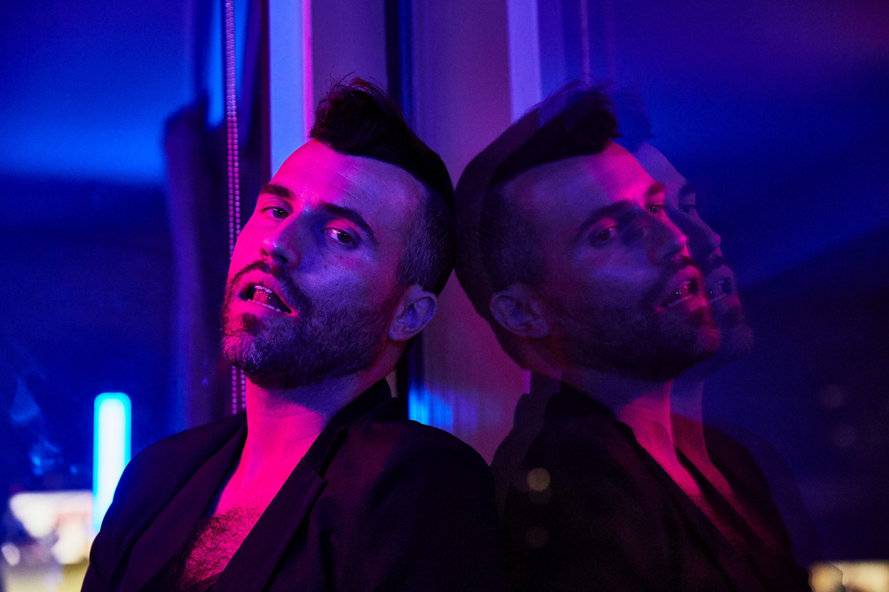
Genre: Pop rock, synth wave
Albums: Excommunication
Songs: Trash, Shameless, Gods + Monsters
Listen to Tyler Glenn Songs | Spotify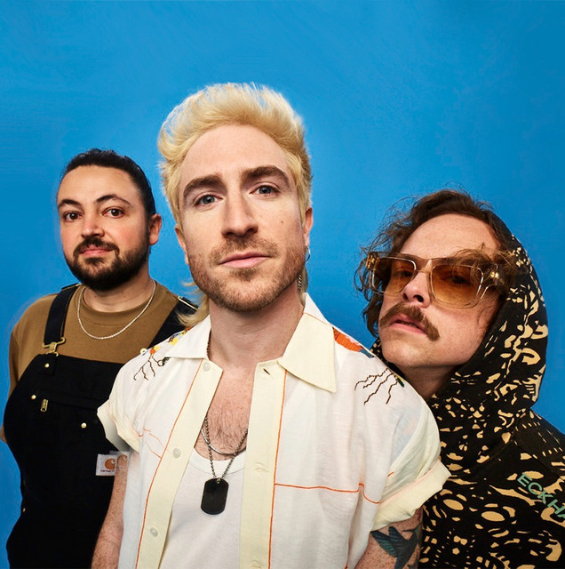
Members: Nicholas Petricca, Sean Waugaman, Eli Maiman
Genre: Alternative rock, indie rock
Albums: TALKING IS HARD, Heights, I Want! I Want!
Songs: Shut Up and Dance, One Foot, Different Colors
Listen to WALK THE MOON Songs | Spotify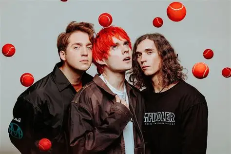
Members: Awsten Knight, Geoff Wigington, Otto Wood
Genre: Pop punk, pop rock
Albums: Double Dare, FANDOM, INTELLECTUAL PROPERTY
Songs: FUNERAL GREY, Stupid For You, Telephone
Listen to Waterparks Songs | Spotify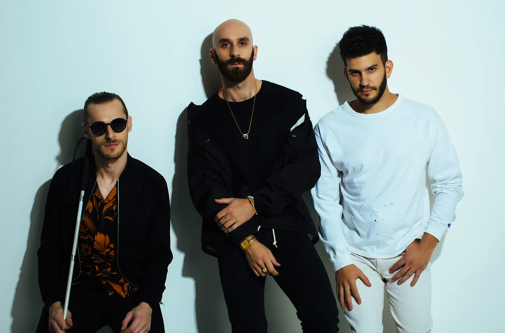
Members: Sam Harris, Casey Harris, Adam Levin
Genre: Alternative rock, indie rock
Albums: VHS, The Beautiful Liar, Orion
Songs: Unsteady, Renegade, Boom
Listen to X Ambassadors Songs | Spotify